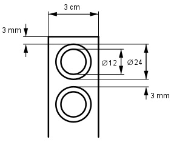

Aufgabe 231 Aus einem Blech von 1,5 m Länge und 3 cm Breite sollen Ringe mit24 mm Außen- und 12 mm Innen- durchmesser ausgestanzt werden. Wie groß ist der Abfall A, wenn zwischen den Ringen und am Anfang und Ende ein Abstand von 3 mm eingehalten werden soll?

1,5 m = 1 500 mm; 3 cm = 30 mm 1 500 mm Anzahl der Ringe = --------------- = 55,6 (24 + 3) mm --> 55 Ringe ABlech = 1 500 mm * 30 mm = 45 000 mm2 ARinge = 55 * (122 - 62) mm2 * π ARinge = 18 651,6 mm2 A = ABlech – ARinge = 45 000 mm2 - 18 651,6 mm2 = 26 348 mm2 = 263,5 cm2